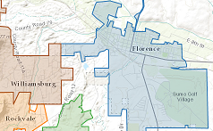
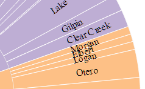
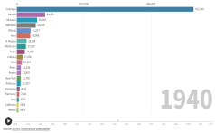
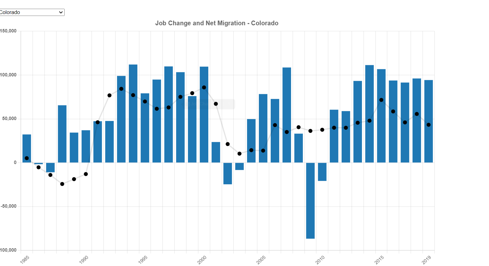
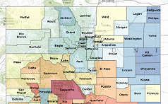
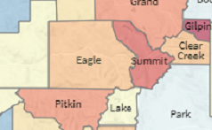

Skip to main content
Visualizations and Interactive Maps produced by the State Demography Office
Overview and Maps
Colorado Demographic Story Map

Municipal Boundary Map
Special Districts Map
COVID Map Series
RUCA Urban-Rural Map
Population Applications
Regional and County Demographic Dashboard
Age Distribution By County
Population Change By Age: 1990-2050
Age Animation
Race Ethnicity by Age Visualization
Colorado County Population
Poverty By Age

Animated Population Chart
Colorado County Bracketology
Historic County Populations

Historical Birthplace of Colorado Residents
Historical Residence of Colorado Born
Population Change: Births, Deaths, and Migration
Migration by Age Group
Change in Births by Age Chart
Net Migration by Age Dashboard
Net Migration of Working Age Population
Net Migration Flows
Colorado State to State Migration
Long Term Trends: Births, Deaths, Migration

Job Change and Net Migration
Housing & Households Applications
Housing Dashboard
Census Applications
Census 2020 Interactive Map
Census 2010 Interactive Map
ACS Interactive Maps
2020 Census Population Density Map
2020 Census Urban Areas Application
SDO Census Data API
Economy & Jobs Applications
Job Sector Chart
Jobs Base Industries Analysis

Unemployment Map
Unemployment Timeseries
Job Change Map

Job Sectors Map
Program Applications
Colorado Main Street Communities Story Map
DOLA Grants Map
Socially and Economically Burdened Area Map
SRF Disadvantaged Communities
HUD Low and Moderate Income Map